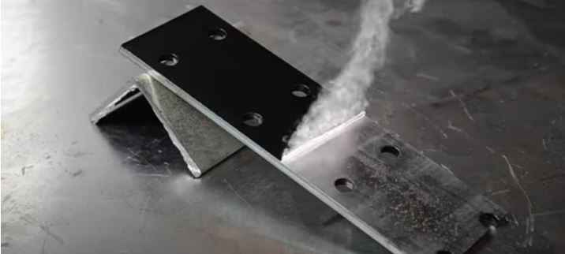

La limpieza láser está transformando la manera en que las industrias y sectores de conservación abordan la limpieza y el mantenimiento de superficies. A través de esta guía de más de 2500 palabras, exploraremos cómo la limpieza láser funciona, sus aplicaciones, beneficios, y responderemos a las preguntas más frecuentes sobre esta innovadora tecnología.
Introducción
La limpieza láser es una tecnología avanzada que utiliza la luz láser para remover contaminantes, óxido, pintura, y otros materiales de superficies sin contacto físico, agua, químicos, o abrasivos. Esta técnica ofrece una solución eficiente y ecológica para diversas aplicaciones, desde la limpieza de patrimonio hasta el mantenimiento de equipos industriales.

¿Cómo Funciona la Limpieza Láser?
La limpieza láser opera mediante la emisión de pulsos de luz láser de alta intensidad sobre la superficie objetivo. La energía del láser vaporiza o descompone la suciedad y los materiales no deseados en la superficie sin dañar el substrato subyacente. Este proceso se controla con precisión para adaptarse a diferentes tipos de materiales y niveles de contaminación.
Ventajas de la Limpieza Láser
- No Invasiva y Segura: Al no requerir contacto físico, la limpieza láser minimiza el riesgo de daño a las superficies tratadas y es segura para el operador.
- Ecológica: Al eliminar la necesidad de productos químicos o soluciones de limpieza, reduce significativamente el impacto ambiental.
- Eficiente y Efectiva: Capaz de alcanzar áreas difíciles y remover materiales resistentes con gran precisión y rapidez.
- Reduce Tiempos de Inactividad: Ideal para entornos industriales donde la eficiencia y el tiempo de operación son críticos.
Aplicaciones de la Limpieza Láser
- limpieza de Patrimonio: Limpieza delicada de obras de arte, monumentos y edificios históricos.
- Mantenimiento Industrial: Remoción de óxido, residuos de producción, y preparación de superficies para pintura o revestimiento.
- Aeroespacial y Automotriz: Limpieza de componentes críticos sin comprometer su integridad estructural.
- Energía y Medio Ambiente: Limpieza de paneles solares, turbinas eólicas y otras infraestructuras con altos estándares de limpieza.
Consideraciones Técnicas
La selección del equipo de limpieza láser adecuado depende de la aplicación específica, incluyendo el tipo de contaminante, la superficie a limpiar y la sensibilidad del material. Los parámetros del láser, como la longitud de onda, la potencia y la duración del pulso, deben ajustarse cuidadosamente para optimizar los resultados de limpieza.
Implementación de la Limpieza Láser
La implementación exitosa de la limpieza láser requiere capacitación y comprensión de la tecnología. Los operadores deben estar entrenados en el manejo seguro de equipos láser y en la selección de parámetros adecuados para cada tarea de limpieza.
Caso de Estudio: Limpieza Láser en la Industria
Un estudio de caso en la industria automotriz muestra cómo la limpieza láser ha reducido los tiempos de inactividad en la producción, mejorado la calidad de la limpieza de componentes y disminuido los costes asociados al mantenimiento y la eliminación de residuos.
Preguntas Frecuentes
¿Es la limpieza láser segura para todos los materiales?
La limpieza láser es segura para la mayoría de los materiales cuando se seleccionan y ajustan correctamente los parámetros del láser. Sin embargo, es crucial realizar pruebas previas en materiales sensibles o desconocidos.
¿Cuál es el coste de la limpieza láser comparado con los métodos tradicionales?
Aunque la inversión inicial en equipos de limpieza láser puede ser más alta, los ahorros a largo plazo en productos químicos, agua, y manejo de residuos, así como la reducción de tiempos de inactividad, pueden justificar el coste.
¿Cómo afecta la limpieza láser al medio ambiente?
La limpieza láser es una opción ecológica que elimina la necesidad de consumibles dañinos para el medio ambiente, contribuyendo a una menor huella ecológica.
Conclusión
La limpieza láser está estableciendo un nuevo estándar en la limpieza y mantenimiento de superficies, ofreciendo una solución no invasiva, eficiente y ecológica para una amplia gama de aplicaciones. Con la evolución continua de la tecnología láser, su implementación se está expandiendo, prometiendo transformar aún más los enfoques tradicionales de limpieza en las industrias y la conservación del patrimonio.